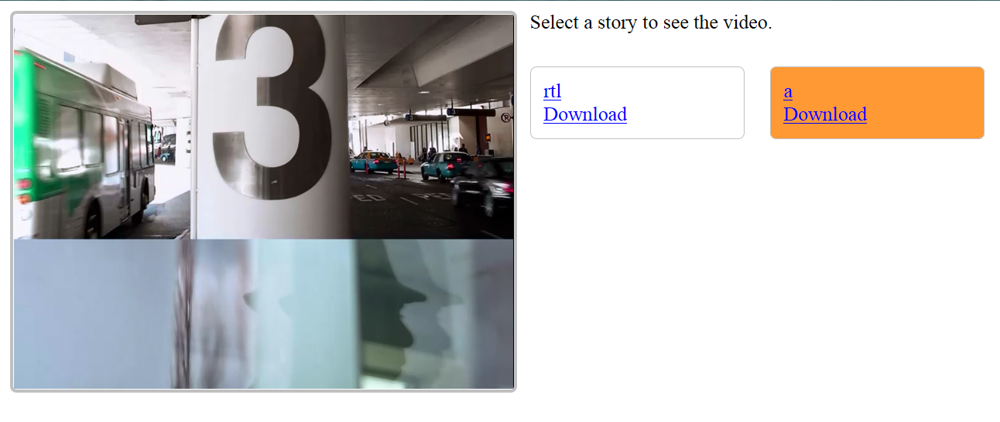

Story Creator Sample Application for Windows Phone 7 (VBWPAzureVideoStory)

Story Creator Sample Application for Windows Phone 7
Summary
This sample solution is a story creator for Windows Phone 7. You can use it to create photo stories on your phone, and send the stories to a Windows Azure service to encode them into videos. The Windows Azure Service includes a REST service built with WCF Web API, a simple HTML5 browser client that allows you to see encoded videos, and a native component encodes videos using WIC and Media Foundation.
While individual pieces of technologies are very interesting, the true power comes when the platforms are combined. We know most developers need to work with the combined platform rather than individual technologies. So we hope this sample solution will be helpful to you.

Use the Application
When you launch the client application, on the first screen you’ll find 3 buttons. They allow you to create a new story, or working on an existing one.

No matter which option you choose, eventually you’ll be taken to the compose page. On this page, you can click the add button on the application bar to add new photos to the story.

This will take you to the choose photos page. On this page, you can choose multiple photos by tapping on them. Tapping an already selected photo will remove the selection. Flip horizontally on the page to scroll the photo list. If there’re too many photos in your phone’s media library, up to 20 will be displayed on a single page. You can use the button with left/right arrows in the application bar to navigate to previous/next pages. Click the button with the check mark to finish the selection.

Once you have added some photos to the story, select one on the design surface, and click the edit button in the application bar. This will bring up a form, in which you can configure how to display the selected photo in the slide show as well as the encoded video. Note in this release, batch editing is not supported. You can of course also remove the selected photo from the story by clicking the remove button. Flip horizontally to scroll the photo list.

After you’re satisfied with your configuration, click the preview button (the first button in the above screenshot). This will navigate you to a full screen page, which displays a slide show of the photos based on your configuration.
You can also click the “…” button in the application bar, which will bring up more menu items, including a menu item labeled “upload”. This command allows you to upload the story and all selected photos to the Windows Azure cloud service. To test this feature, you’re required to either host the cloud service project using your Windows Azure account, or start the cloud service project using Compute Emulator. See below for more technical information.
The video encoding may take a while, depending on the size of the story. As for now, after the encoding is finished, you won’t get any notifications. We may improve the experience by integrating push notification in the next release. But you can check the home.htm page inside the Web Role (navigate to http://127.0.0.1:81/ or your cloud deployment). If the video is successfully encoded, after refresh the page, you’ll see it displayed. Click a video’s name to play it on the left side, or download it by clicking the corresponding Download link.

Prerequisites
To build and run the sample, the following system is required:
- Windows 7. Windows Phone SDK requires you to use Windows Vista or Windows 7. Our native encoding component requires new features in Windows 7 (such as sink writer). Thus the only supported operating system is Windows 7. We recommend you to use a 64 bit OS, although a 32 bit OS will also work with some extra configuration (refer to the next section for more information).
- Visual Studio 2010 with SP1
- Windows Phone 7 SDK (Mango SDK will also be fine, but this sample is built with WP7)
- Silverlight Toolkit for Windows Phone 7
- Latest Visual Studio Tools for Windows Azure
- WCF Web API Preview 4 (If you use a newer version, you may need to fix a few break changes)
- A browser capable of playing HTML 5 mpeg4 videos (such as IE9)
Build and Deploy the Solution
To build the source solution, first please make sure you meet all system requirements described above.
If you are using a 32 bit OS, you need to configure the NativeEncoderProject to build against win32, instead of x64. Note if later you decide to deploy the cloud service to the cloud, you need to change the configuration back to x64, as Windows Azure cloud machines use 64 bit OS.
Certain references, such as Microsoft.ApplicationServer.Http, may require special attention, because the path on my machine is different from yours. You may need to remove the references, and add again using the correct path.
Then configure the StoryCreatorCloudService project as the start project (the cloud service project), if it’s not already configured.
Start the StoryCreatorCloudService project, and make sure it has finished startup.
Start the VideoStoryCreator project (the Windows Phone project) in either the emulator or an actual phone.
Enjoy!
If you want to deploy the solution to the cloud, do not forget to modify the following settings:
- Download the x64 version of VC++ 2010 Redistribute Package from http://www.microsoft.com/download/en/details.aspx?id=14632. We don’t include the package in the project to reduce the size. This package is required in the Worker Role’s startup task, because we need to run native components inside the Worker Role.
- Add the above download package to the Worker Role project (VideoEncodingWorkerRole) as an existing item, and make sure the “Copy to Output Directory” property is set to “Copy always” or “Copy if newer”. Note you don’t need to install it on your local machine, as VC++ runtime is automatically installed when installing Visual Studio. But this package is required for cloud deployment. You can check the startup.bat file in the Worker Role project.
- Make sure your build target Release instead of Debug. In the above steps, we installed the release version of VC++ 2010 runtime to the cloud machine. If your projects are built against Debug, you’ll encounter problems, because the debug version of VC++ 2010 is different from the release version.
- Modify ServiceConfiguration.cscfg in the cloud service project, and change all connection strings to target your cloud storage.
- After the deployment, open the VideoStoryCreator project (Windows Phone project). Under the ServiceLocators folder, open the StoryServiceLocator file. In the start of the StoryServiceLocator class, you’ll find a filed named _baseServiceUri. Please change its value to the cloud service address, such as http://someurl.cloudapp.net/stories.
- Make sure the osFamily is 2. This is already configured for you in the cscfg file. But if you modified the configuration, you must change it back. Our native component uses new features introduced in Windows 7 and Windows Server 2008 R2, which corresponds to OS 2.x on Windows Azure.
Extend the Solution
You can extend the solution in two ways:
- Add more transitions. Please refer to the “Create More Transitions.docx” document under the Specs folder for more information.
- Add more clients. You can add more clients (such as an iPad client) that use the same cloud service. Our cloud service’s REST API is simple (although you may consider it as limited). Please refer to the StoryService class for more information.
Technical Details
For more information about technical details, please refer to the documents under the Specs folder. Architecture.docx describes the overall architecture of the source solution. How to Create More Transitions.docx describes how to extend the transition system. Other documents are design specifications written when we designed each feature.
Known Issues and Limitations
1) In this release, we do not support authentication, and the encoded videos are stored in blobs with public access. So if you want to upload photos to the cloud, make sure to protect your own privacy.
2) On some machines, WebDAV may cause problems when using HTTP verbs such as PUT and DELETE. Out Web Role contains a service built with WCF Web API, which uses the PUT verb. If your service reports Method Not Allowed when testing in Compute Emulator, please disable WebDAV on your local machine. Refer to http://social.msdn.microsoft.com/Forums/en-US/windowsazuredevelopment/thread/a22b9e60-8353-40c7-af3e-69a8f18240c1 for more details.
3) In this release, we don’t have a nice infrastructure to report messages from the cloud to the phone. After you click the upload button, you may find nothing happens. This is currently by design. Please do not think the service doesn’t work. After a while, you’ll receive a message box popup, indicating either something went wrong, or the story has been successfully uploaded.
At this time, even if the story has been uploaded, the video has not been encoded yet. The Web Role creates a message in the Windows Azure queue, and reports succeed to the client. It may take a few minutes for the Worker Role to encode the video.
You can check your Azure storage (using tools such as Azure Storage Explorer) to see if all photos have been uploaded and the video has been encoded. In the blob storage, you should find a container named videostories. Inside the container, for each story, you should find the following components:
- A .xml configuration file, which is created shortly after you click the upload button (after the Web Role receives the request and performed some simple processing).
- One .jpg file for each photo in the story. Those photo files are uploaded from the phone directly, using SAS.
- A .mp4 video file, created by the Worker Role. If you see this file, it means the video has been successfully encoded.
4) Only jpeg files are supported in this release. By default, all photos taken on Windows Phone use jpeg format.
5) In this release, all photos uploaded to the cloud must have fixed resolution of 800*600. The Windows Phone client automatically resizes the photos. If you’re building your own client, you should be aware of this limitation.
6) Sometimes, when you’re working on an existing story, if you click the home button to return to the home page, you won’t be able to create a new story. Consider this as a bug we’re investigating. If this happens, please launch a new instance of the application.
7) In the browser client, sometimes you may not see a newly encoded video listed. If this happens, try to clear the browser cache and try again.
8) In the browser client, sometimes after you click the name of a video, it may take a few seconds to start playing the video.
9) In the current release, the browser client doesn’t refresh automatically. So you must refresh manually to see new videos.
10) In the current release, the GET operation in the story REST service doesn’t support paging. So if you have encoded too many stories, the performance will degrade.
11) In the Windows Phone client, if your story contains too many photos, the performance will degrade. This should affect how many photos are there in the media library, though. We’ll try to improve performance for large stories in future releases.
12) We handle the phone’s tombstone stages and save the stories. So to make a story saved in the phone’s local storage, you need to make the tombstone happen (by navigating away from the application). When use the application on the phone normally, this should not be a problem. But when debugging the application, if you stop the debugging without navigating away from the application, your current story won’t be saved.
Send us Your Feedback
Due to time and effort limitation, the current release doesn’t contain a lot of features we originally considered to implement. To name a few:
- Mango support
- Add text to each photo
- Use your voice record to describe the story
- Add videos you recorded on the phone to the story (as well as photos)
- Take a photo/video as you’re composing the story
- Pin individual stories to the phone’s home page
- Push notification
- A nicer UI
- More clients (such as iPad, HTML5, desktop Windows, etc.)
If you like this sample, please send us feedbacks. We welcome any feedbacks, such as bug reports, feature requests, violating of best coding practices, and so on. You can use the following email addresses to reach us:
- Development: Yi-Lun Luo v-ylluo@microsoft.com
- VB localization: Ming Xu v-xum@microsoft.com
- Chinese localization: Xiao-Cheng Fan v-xpfan@microsoft.com
- onecode@microsoft.com
We appreciate your feedback!